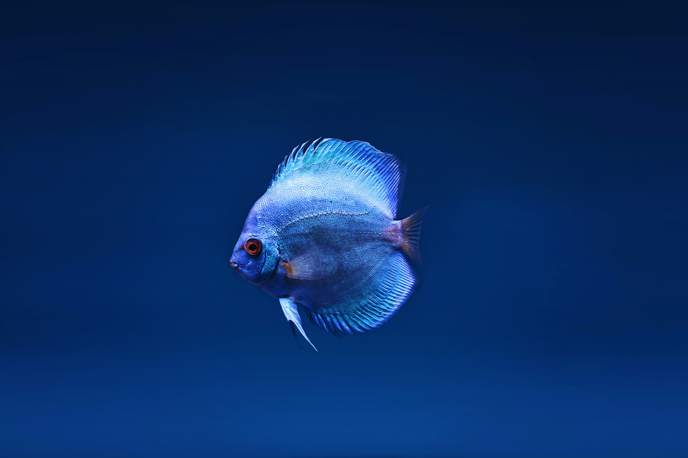
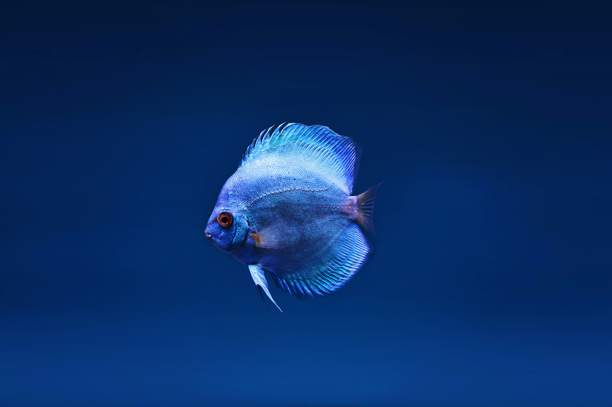
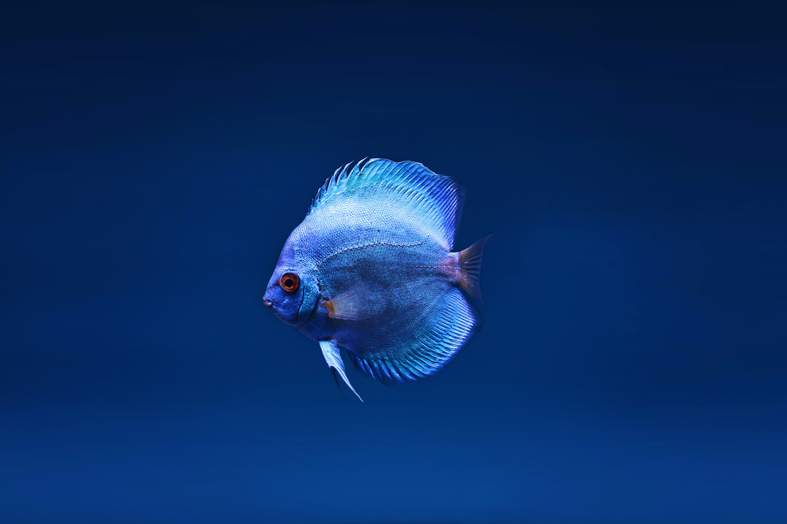

Riverspace was formed during the great earth scorch of 2047. Since then we have developed an underwater metropolis and under water housing units.

"We love Riverspace! Everysince the world has been scorched by the solar flare living on the planets surface has been pretty tough. But riverspace makes it easy to escape the post-apocalypse lifestyle
- Tammy Smith